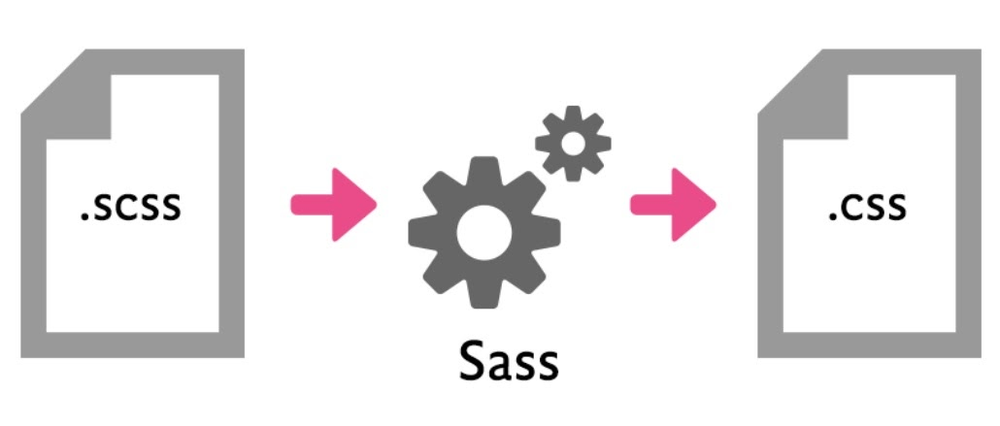

Basics of HTML markup for developers
Speaker Igor Sobol - HTMLCoder
 © Sobol Igor
© Sobol Igor
Lecture plan
- Project structure (folders)
- Semantics and Accessibility
- Preprocessors (postprocessors)
- BEM - Block Element Modifier
- Flexbox
- Graphics (svg) and fonts
Project structure (folders)
- stylesheets
- base
- bootstrap
- components
- layout
- modules
- themes
- utils
The set of folders for each project is individual.

Semantics
- Language:
<html lang="en">, <html lang="ru">
- Headings:
<h1>, <h2>, <h3>, <h4>, <h5>, <h6>
- Images:
<img alt="">, <svg role="image" aria-label="">
- Figures:
<figure>, <figcaption>
- Lists:
<ul>, <ol>, <li>
For what?
- search engines
- reader modes
- screen readers
- new devices
Accessibility

Preprocessors (postprocessors)
- A program that converts one data type to another data type.
- The task of preprocessors is to speed up and simplify the development process.
- For HTML, one of the most popular preprocessors is Haml; for CSS, Sass.
Haml
Haml is a markup language that allows you to cleanly and simply describe the HTML of any web document without using inline code.
Code samples HTML
<!DOCTYPE html>
<html lang="en">
<head>
<title>Haml test</title>
<meta charset="UTF-8">
<link rel="stylesheet" href="screen.css">
</head>
Code samples HAML
!!!
%html
%head
-# This is comment
%title Haml test
%meta(charset="UTF-8")
%link(rel="stylesheet" href="screen.css")
%body
Sass(scss)
- Full CSS Compatibility
- Great functionality
- Large community

Code samples scss
$font-stack: Helvetica, sans-serif;
$primary-color: #333;
body {
font: 100% $font-stack;
color: $primary-color;
}
Code samples css
body {
font: 100% Helvetica, sans-serif;
color: #333;
}

Code samples scss - @mixin
@mixin large-text {
color: #ff0000;
font: {
size: 20px;
weight: bold;
}
}
Code samples scss - @mixin
.page-title {
@include large-text;
padding: 4px;
margin-top: 10px;
}
Code samples sass - @each
@each $animal in puma, sea-slug, egret {
.#{$animal}-icon {
background-image: url('/images/#{$animal}.png');
}
}
Code samples css
.puma-icon {
background-image: url('/images/puma.png'); }
.sea-slug-icon {
background-image: url('/images/sea-slug.png'); }
.egret-icon {
background-image: url('/images/egret.png'); }
BEM
Block Element Modifier
- пёсик
- пёсик__хвостик, пёсик__черный-носик
- пёсик--пушистый, пёсик--белый
Graphics
Scalable Vector Graphics

fonts
Font connection methods:
- <link>
- @import
- @font-face;
Examples of font sources:
- Google fonts;
- Font squirrel.